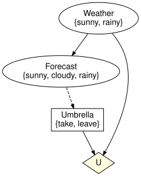
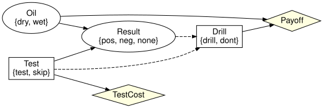

Influence diagrams as attributed C-sets
Simon Frost
- Overview
- Setup
- The schema
- Building a diagram
- Information arcs are not causal arcs
- Utilities are not variables
- Precedence and sequential decisions
- Validation
- From and to Bayesian networks
- Summary
- References
Overview
An influence diagram (Howard and Matheson 2005) extends a Bayesian network with decisions, the information available when each decision is taken, utility functions and a decision order (SPEC section 23). InfluenceDiagrams.jl represents it as an attributed C-set over the schema SchInfluenceDiagram, which extends the SchBayesNet schema of BayesianNetworks.jl with five objects:
| object | meaning | homs |
|---|---|---|
Decision | a decision controlling an action variable | decision_variable |
InformationInput | one variable known when a decision is taken | information_decision, information_variable |
Utility | a utility node | |
UtilityInput | one variable read by a utility node | utility_node, utility_variable |
DecisionPrecedence | an explicit ordering of two decisions | earlier, later |
The three kinds of arc of SPEC section 23 (causal, informational, value) are three different objects, so they can never be confused: a causal Input feeds a mechanism, an InformationInput feeds a decision, a UtilityInput feeds a utility node. The representation choices this settles – separate value nodes, information arcs that are not causal, an explicit decision order – are the ones surveyed by Bielza et al. (2011).
Two conditions on the decision order are worth keeping apart from the start. Shachter (1986) calls a diagram regular when a directed path runs through all the decisions; no-forgetting (perfect recall) is the stronger property that everything known at a decision is still known at every later one. validate requires neither, because a diagram that forgets is a well-formed limited-memory influence diagram (Lauritzen and Nilsson 2001).
Setup
using InfluenceDiagrams
using Graphs # `ne` counts the edges of the `SimpleDiGraph`s returned belowThe schema
SchInfluenceDiagramACSets.Schemas.BasicSchema{Symbol}([:Variable, :State, :Mechanism, :Input, :Decision, :InformationInput, :Utility, :UtilityInput, :DecisionPrecedence], [(:state_variable, :State, :Variable), (:target, :Mechanism, :Variable), (:input_mechanism, :Input, :Mechanism), (:input_variable, :Input, :Variable), (:decision_variable, :Decision, :Variable), (:information_decision, :InformationInput, :Decision), (:information_variable, :InformationInput, :Variable), (:utility_node, :UtilityInput, :Utility), (:utility_variable, :UtilityInput, :Variable), (:earlier, :DecisionPrecedence, :Decision), (:later, :DecisionPrecedence, :Decision)], [:Label, :Position, :Ref], [(:variable_name, :Variable, :Label), (:space_ref, :Variable, :Ref), (:state_name, :State, :Label), (:state_position, :State, :Position), (:mechanism_name, :Mechanism, :Label), (:kernel_ref, :Mechanism, :Ref), (:input_position, :Input, :Position), (:decision_name, :Decision, :Label), (:utility_name, :Utility, :Label), (:utility_ref, :Utility, :Ref), (:information_position, :InformationInput, :Position), (:utility_position, :UtilityInput, :Position)], Tuple{Union{Nothing, Symbol}, Symbol, Symbol, Tuple{Tuple{Vararg{Symbol}}, Tuple{Vararg{Symbol}}}}[])The same schema is defined in the Lean project under proofs/, which emits proofs/schemas/influence_diagram.schema.json; the test suite checks that schema_json(SchInfluenceDiagram) agrees with it.
sj = schema_json(SchInfluenceDiagram)
[d["name"] for d in sj["Ob"]]9-element Vector{String}:
"Variable"
"State"
"Mechanism"
"Input"
"Decision"
"InformationInput"
"Utility"
"UtilityInput"
"DecisionPrecedence"Building a diagram
influence_diagram mirrors bayesnet: variables with their states, mechanisms with ordered parents, decisions with ordered information sets and utilities with ordered scopes. The umbrella problem has a chance variable Weather, a forecast that depends on it, a decision Umbrella that sees the forecast, and a utility over the weather and the action.
id = influence_diagram(:Weather => [:sunny, :rainy],
:Forecast => [:sunny, :cloudy, :rainy],
:Umbrella => [:take, :leave];
mechanisms = [:Forecast => :Weather],
decisions = [:Umbrella => :Forecast],
utilities = [:U => (:Weather, :Umbrella)])InfluenceDiagrams.InfluenceDiagram {Variable:3, State:7, Mechanism:2, Input:1, Decision:1, InformationInput:1, Utility:1, UtilityInput:2, DecisionPrecedence:0, Label:0, Position:0, Ref:0}
| Variable | variable_name | space_ref |
|---|---|---|
| 1 | Weather | NoRef() |
| 2 | Forecast | NoRef() |
| 3 | Umbrella | NoRef() |
| State | state_variable | state_name | state_position |
|---|---|---|---|
| 1 | 1 | sunny | 1 |
| 2 | 1 | rainy | 2 |
| 3 | 2 | sunny | 1 |
| 4 | 2 | cloudy | 2 |
| 5 | 2 | rainy | 3 |
| 6 | 3 | take | 1 |
| 7 | 3 | leave | 2 |
| Mechanism | target | mechanism_name | kernel_ref |
|---|---|---|---|
| 1 | 2 | Forecast_mechanism | NoRef() |
| 2 | 1 | Weather_mechanism | NoRef() |
| Input | input_mechanism | input_variable | input_position |
|---|---|---|---|
| 1 | 1 | 1 | 1 |
| Decision | decision_variable | decision_name |
|---|---|---|
| 1 | 3 | Umbrella |
| InformationInput | information_decision | information_variable | information_position |
|---|---|---|---|
| 1 | 1 | 2 | 1 |
| Utility | utility_name | utility_ref |
|---|---|---|
| 1 | U | NoRef() |
| UtilityInput | utility_node | utility_variable | utility_position |
|---|---|---|---|
| 1 | 1 | 1 | 1 |
| 2 | 1 | 3 | 2 |
Every object is inspectable. Decisions are named after their action variable unless told otherwise, and the information set is returned in information_position order, the domain order of the decision’s policy.
decision_names(id), information_names(id, :Umbrella), utility_scope_names(id, :U)([:Umbrella], [:Forecast], [:Weather, :Umbrella])action_names(id), chance_names(id)([:Umbrella], [:Weather, :Forecast])Information arcs are not causal arcs
The forecast informs the umbrella decision, but nothing generates the umbrella: the action variable has no mechanism and no parents. The derived causal graph (variable_graph) only contains Weather -> Forecast.
has_mechanism(id, :Umbrella), parents(id, :Umbrella)(false, Int64[])information_graph adds the dashed arcs (information variable to action) and the explicit precedence; the declared information is consistent when it is acyclic, and decision_order reads the order of the decisions off it. Acyclicity is weaker than no-forgetting (perfect recall), which decision variable elimination needs and which no_forgetting_arcs and with_no_forgetting report and repair; vignette 04 covers it.
ne(variable_graph(id)), ne(information_graph(id))(1, 2)to_graphviz draws all three kinds of arc: chance variables are ellipses, decisions are boxes, utilities are diamonds, and information arcs are dashed.
to_graphviz(id)
Utilities are not variables
A utility node has no states and cannot be the parent of anything, because it is not a Variable; SPEC section 37 item 5 (“utility nodes have no children”) holds by construction.
has_variable(id, :U), nparts(id, :Utility), nparts(id, :UtilityInput)(false, 1, 2)Precedence and sequential decisions
With several decisions, the order is induced by the arcs: an action that informs (or causally affects an information variable of) another decision precedes it. The two-stage test-then-act example of two_stage_diagram has Test before Drill because Drill observes Test and the test result.
t = two_stage_diagram()
decision_name.(Ref(t), decision_order(t))2-element Vector{Symbol}:
:Test
:Drillto_graphviz(t; rankdir = "LR")
Unordered decisions can be ordered explicitly with add_precedence! (or the precedence keyword); a precedence that contradicts the arcs is a validation error.
add_precedence!(t, :Drill => :Test)
try
validate(t)
catch e
e
endDecisionPrecedenceCycleError([:Test, :Drill])Validation
validate runs the structural checks of BayesianNetworks.jl on the chance part and the twelve checks of SPEC section 37 on the decision part, throwing a typed error for the first violation; validation_errors lists all of them. With closed = true every variable must have exactly one generator: a chance mechanism or a decision.
validate(id; closed = true)An information variable downstream of the action is not available when the decision is taken:
bad = influence_diagram(:Weather => [:sunny, :rainy], :Umbrella => [:take, :leave],
:Wet => [:no, :yes];
mechanisms = [:Wet => (:Weather, :Umbrella)],
decisions = [:Umbrella => :Wet], utilities = [:U => :Wet])
validation_errors(bad)1-element Vector{Exception}:
InvalidInformationSetError(:Umbrella, :Wet, :downstream)An action variable with a chance mechanism, or controlled by two decisions, violates decision uniqueness:
dup = umbrella_diagram()
add_mechanism!(dup, :Umbrella; inputs = [:Forecast])
validation_errors(dup)1-element Vector{Exception}:
DecisionUniquenessError(:Umbrella, :Umbrella, :has_mechanism)From and to Bayesian networks
An InfluenceDiagram is also an AbstractBayesNet, so every inspection function of BayesianNetworks.jl applies to it, and the two types convert into each other by copying the shared objects (the pullback data migration along the schema inclusion). BayesNet(id) drops the decision layer and leaves the action variables without a mechanism, an open network; InfluenceDiagram(bn) is the starting point for adding decisions to an existing network.
bn = BayesNet(id)
nparts(bn, :Mechanism), has_mechanism(bn, :Umbrella)(2, false)id2 = InfluenceDiagram(bn)
add_decision!(id2, :Umbrella; information = [:Forecast])
add_utility!(id2, :U; scope = [:Weather, :Umbrella])
is_isomorphic(id2, id)trueDiagrams serialise to JSON in the same envelope as networks (json_influence_diagram), and canonicalize renumbers parts deterministically so that diagrams built in different orders compare equal.
Summary
An influence diagram is one ACSet over SchInfluenceDiagram, so decisions, information sets, utilities and the decision order are data of the same structure as the underlying Bayesian network, and the three kinds of arc are three different schema objects rather than a convention. validate checks what makes the diagram well-formed – acyclicity, resolvable references, consistent information sets – and deliberately not no-forgetting, and BayesNet/InfluenceDiagram move between the two schemas without loss. The next vignette, Policies and expected utility, binds numbers to this syntax and computes what a strategy is worth.
References
Bielza, Concha, Manuel Gómez, and Prakash P. Shenoy. 2011. “A Review of Representation Issues and Modeling Challenges with Influence Diagrams.” Omega 39 (3): 227–41. https://doi.org/10.1016/j.omega.2010.07.003.
Howard, Ronald A., and James E. Matheson. 2005. “Influence Diagrams.” Decision Analysis 2 (3): 127–43. https://doi.org/10.1287/deca.1050.0020.
Lauritzen, Steffen L., and Dennis Nilsson. 2001. “Representing and Solving Decision Problems with Limited Information.” Management Science 47 (9): 1235–51. https://doi.org/10.1287/mnsc.47.9.1235.9779.
Shachter, Ross D. 1986. “Evaluating Influence Diagrams.” Operations Research 34 (6): 871–82. https://doi.org/10.1287/opre.34.6.871.